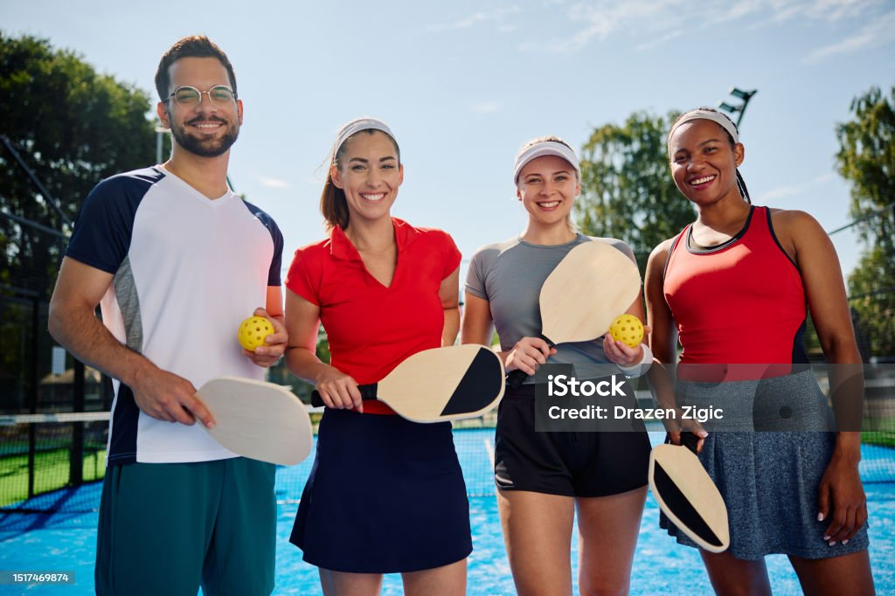
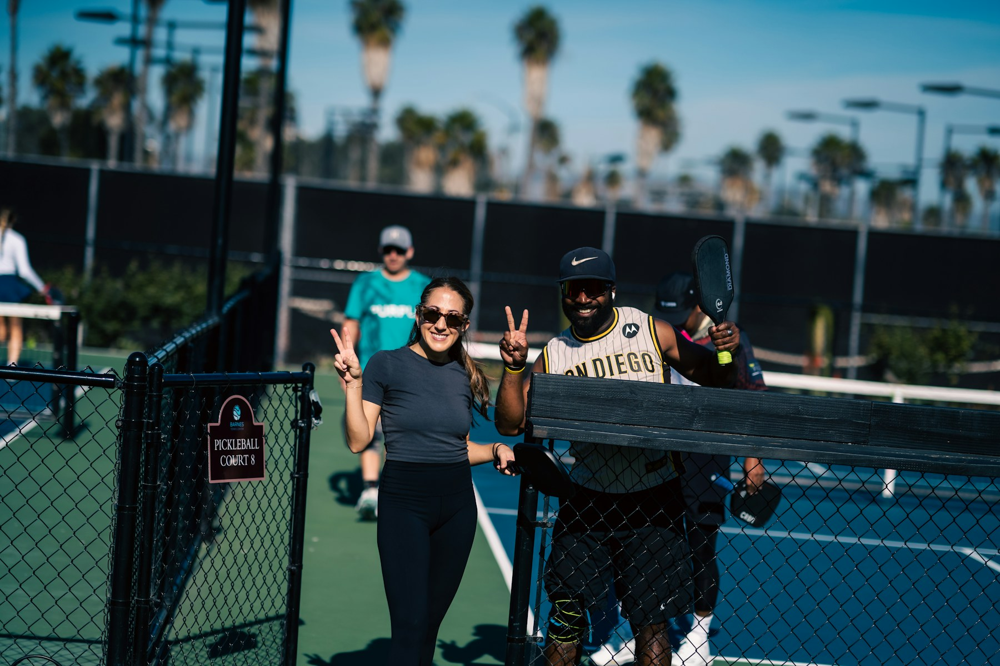

Bienestar
Una pausa activa ayuda a reducir el estrés, moverse y regresar al trabajo con mayor concentración.
Colegio de Abogadas y Abogados de Costa Rica
Una prueba simple, sin obras permanentes. Usar una cancha existente durante 8–12 semanas para conocer el interés real de la comunidad.

Beneficios claros
El pickleball puede mejorar el bienestar, crear nuevas relaciones y aprovechar mejor una cancha que ya existe.
Una pausa activa ayuda a reducir el estrés, moverse y regresar al trabajo con mayor concentración.
Los partidos de dobles crean un espacio informal para conocer colegas y ampliar redes profesionales.
Las reglas básicas son sencillas. Personas de distintas edades y niveles pueden participar.
Dos canchas temporales permiten hasta ocho jugadores activos, con rotación entre partidos cortos.
Abogadas, abogados, personal e invitados pueden compartir una actividad social y saludable.
Más participación
Una cancha de tenis suele recibir de dos a cuatro jugadores. Dos canchas temporales de pickleball permiten hasta ocho jugadores activos al mismo tiempo.
La distribución final debe verificarse según las medidas reales y el espacio de seguridad de la cancha.
2 canchas temporalesHasta 8 jugadores activos
Juego abierto
No hace falta formar un equipo antes de llegar. Durante el horario abierto, cada persona entra a la fila, juega un partido corto y rota.

Asistir durante el horario de juego abierto.
Anotar el nombre o colocar la paleta.
Cuatro personas juegan un partido corto de dobles.
Entran nuevos jugadores y cambian las parejas.
Primero probar
El plan piloto no promete una construcción futura. Cada etapa posterior necesita datos, revisión y una nueva aprobación.
Cinta removible, redes portátiles, horarios definidos y registro de participación.
Decisión solicitadaEvaluar líneas permanentes de pickleball sin eliminar el uso para tenis.
Evaluación futuraEstudiar esta opción únicamente si existe una demanda fuerte y constante.
No se solicita ahoraPlan piloto
La cancha se mantiene sin cambios permanentes. El Colegio obtiene datos reales sobre participación e interés.
Cómo funciona
Confirmar el espacioVerificar que dos canchas temporales caben de forma segura.
Marcar temporalmenteUsar cinta removible y redes portátiles. Sin pintura ni reparación de superficie.
Definir horariosCrear horas de juego abierto para llegar solo o en grupo.
Probar 8–12 semanasMedir uso inicial y participación repetida.
Revisar los datosPresentar los resultados antes de considerar cambios permanentes.
Qué se mide
Lo que no se solicita
Decisión solicitada
Autorizar una prueba temporal de pickleball en una cancha existente, con líneas removibles y redes portátiles. Al terminar, revisar la participación real antes de considerar cualquier proyecto permanente.